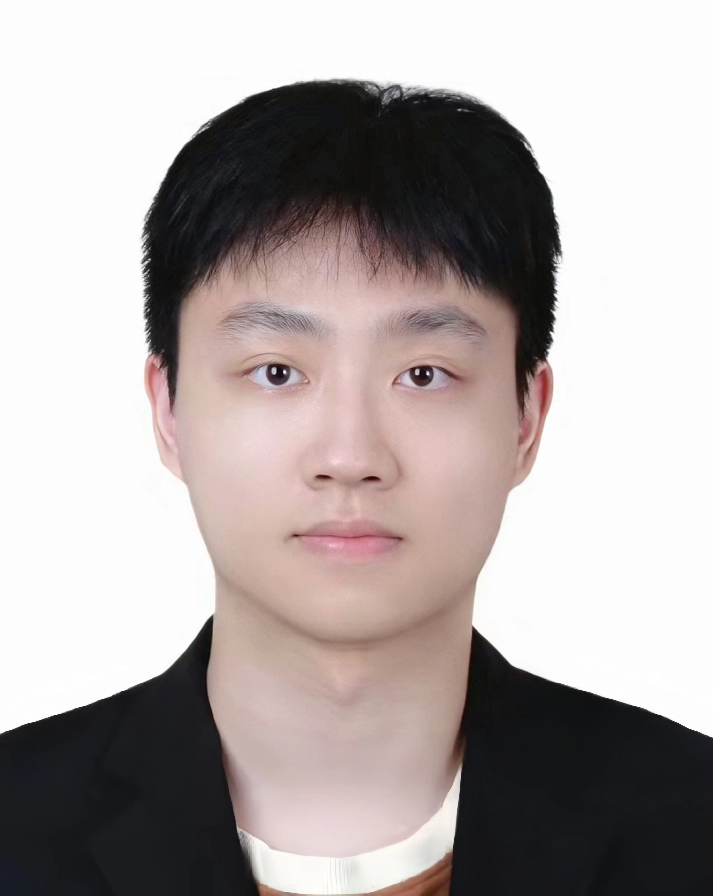

Zihang Xu 徐子航Master Student
Electrical and Electronic Engineering
|
 |


Biography
I will be a master student in the Department of Electrical and Electronic Engineering, The University of Hong Kong. Previously, I was a research intern at Shenzhen Research Institute of Big Data (SRIBD), advised by Prof. Haofeng Li. Before that, I received my bachelor's degree from the School of Health Sciences and Biomedical Engineering, Hebei University of Technology in 2022.
My research interest lies in vision and language, medical imaging analysis, and bioinformatics, especially label-limited learning.
News
- [06/2023] One paper is accepted by MICCAI2023!
Experience
- [09/2022 - 06/2023] Research Intern, SRIBD, supervised by Prof. Haofeng Li.
- [06/2021 - 06/2022] Research Intern, State Key Laboratory of Reliability and Intelligence of Electrical Equipment, advised by Prof. Zhenghua Xu.
Selected Publications [Google Scholar]

|
ASC: Appearance and Structure Consistency for Unsupervised Domain Adaptation in Fetal Brain MRI Segmentation Zihang Xu, Haifan Gong, Xiang Wan, Haofeng Li*. Medical Image Computing and Computer Assisted Intervention (MICCAI), 2023. |

|
PCA: Semi-Supervised Segmentation with Patch Confidence Adversarial Training Zihang Xu, Shuo Zhang, Zhenghua Xu*. Arxiv Preprint, 2023. |
Honors & Awards
-
Provincial Third Prize in Hebei Province Innovation and Entrepreneurship Competition, 2021 -
Second-class Scholarship of Hebei University of Technology, 2020 -
Third-class Scholarship of Hebei University of Technology, 2019 Miscellaneous
- Academic Countdown
- Affections: Football; Music; Travel; Fitness
© Zihang Xu | Last updated: July 2023